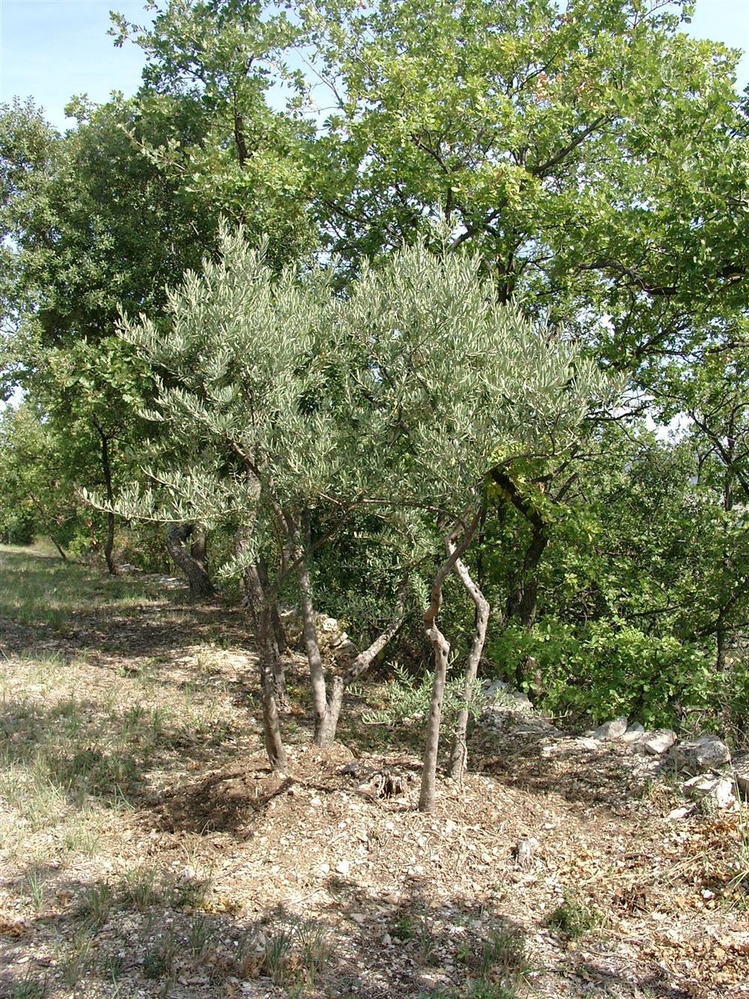

Le terme « soins palliatifs » fait souvent peur, car il est associé à la fin de vie. Pourtant, il désigne avant tout une approche globale, centrée sur le confort et la qualité de vie du patient, quelle que soit la gravité de sa maladie.
Que sont réellement les soins palliatifs ?
Les soins palliatifs regroupent l'ensemble des soins actifs et continus visant à soulager la douleur, apaiser la souffrance psychologique et préserver la dignité de la personne malade. Ils ne se limitent pas aux derniers jours de vie : ils peuvent accompagner un patient sur plusieurs semaines, voire plusieurs mois.
- Soulagement de la douleur et des symptômes physiques
- Soutien psychologique du patient et de son entourage
- Respect des volontés et de la dignité de la personne
- Coordination avec l'ensemble des professionnels de santé
Pourquoi choisir un accompagnement à domicile ?
De nombreux patients expriment le souhait de rester chez eux, entourés de leurs proches et de leurs repères, plutôt qu'en établissement. Un accompagnement à domicile permet de préserver ce cadre familier tout en garantissant des soins de qualité, adaptés à l'évolution de la maladie.
Chez Deltasoins, nous intervenons à Marseille pour accompagner patients et familles avec une infirmière dédiée, à l'écoute des besoins physiques mais aussi émotionnels de chacun.
Le rôle de la famille
Les proches jouent un rôle essentiel dans l'accompagnement. Ils sont souvent les premiers témoins des besoins du patient. Notre équipe les aide à comprendre l'évolution des soins, à gérer leurs propres émotions, et à trouver leur place aux côtés du patient sans s'épuiser.
Cet article a un objectif informatif général. Pour toute question sur votre situation personnelle, n'hésitez pas à nous contacter directement : nous prenons le temps d'échanger avec vous.

Comment démarrer un accompagnement ?
La mise en place de soins palliatifs à domicile commence généralement par un échange avec le médecin traitant, suivi d'une évaluation des besoins du patient. Notre équipe se déplace ensuite pour organiser les soins, en toute simplicité.